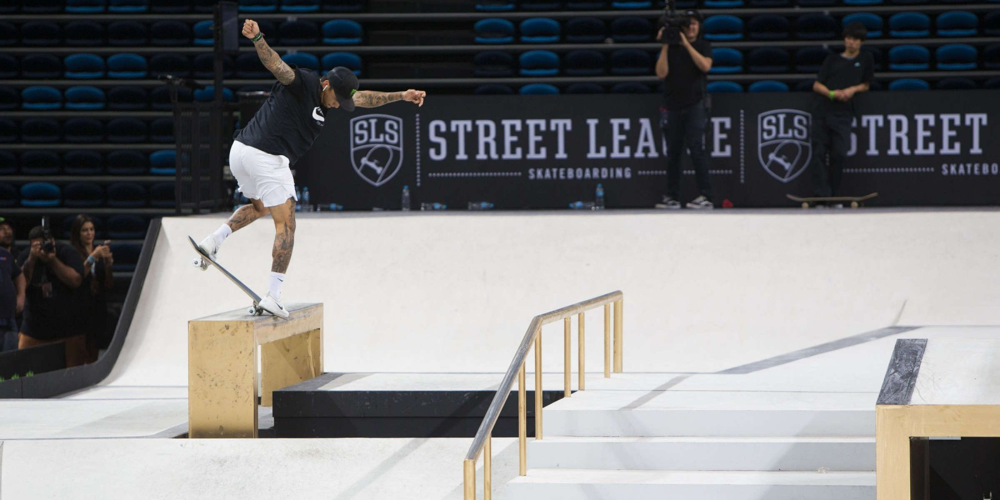

Acima de tudo, é fundamental ressaltar que a execução dos pontos do programa prepara-nos para enfrentar situações atípicas decorrentes dos modos de operação convencionais.
Podemos já vislumbrar o modo pelo qual o novo modelo estrutural aqui preconizado acarreta um processo de reformulação e modernização do impacto na agilidade decisória